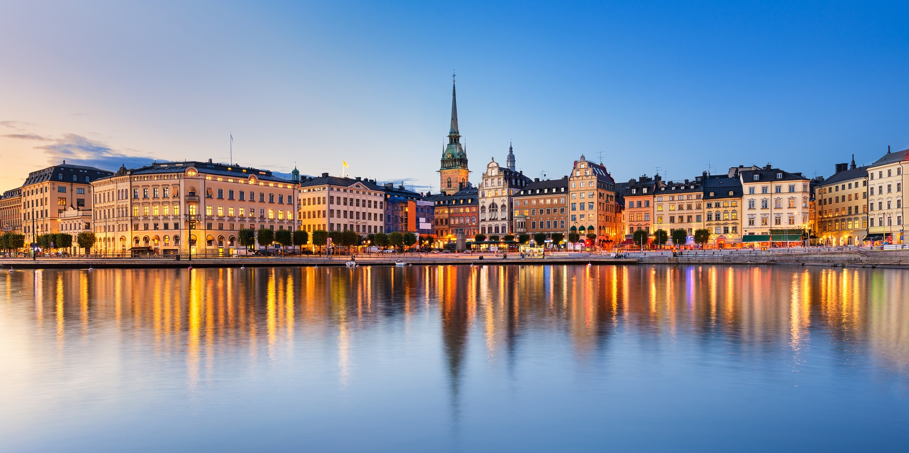

×

Sweden
Люди
Численность населения - низкая,
Средняя продолжительность жизни — 80.8 лет у мужчин, 84.0 лет у женщин,
Языки — Шведский (официальный и самый распространённый),
Религия - Современная ситуация — атеизм В соответствии с данными The Economist Newspaper LTD за 2016 год 67,2% населения страны являются христианами, 27% - нерелигиозны, 4,6% - мусульмане, 0,1% - иудаисты, 0,2% - индуисты. По другим исследования до 85 % шведов являются атеистами — это самый высокий уровень атеизма в мире.

____